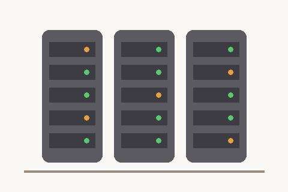

部品でできたページ
見た目は 1 ページでも、中身はいくつものファイルの組み合わせです。

（JavaScript が動くと、ここの文章が書き換わります）
Network タブで確かめよう
- リクエストは何回？ それぞれ何のファイル？（Type 列を見る）
- いちばん大きいファイルはどれ？（Size 列を見る）
- ファイル名をクリックして「Headers（ヘッダー）」を開くと、Request URL・Request Method・Status Code が見える
見た目は 1 ページでも、中身はいくつものファイルの組み合わせです。

（JavaScript が動くと、ここの文章が書き換わります）